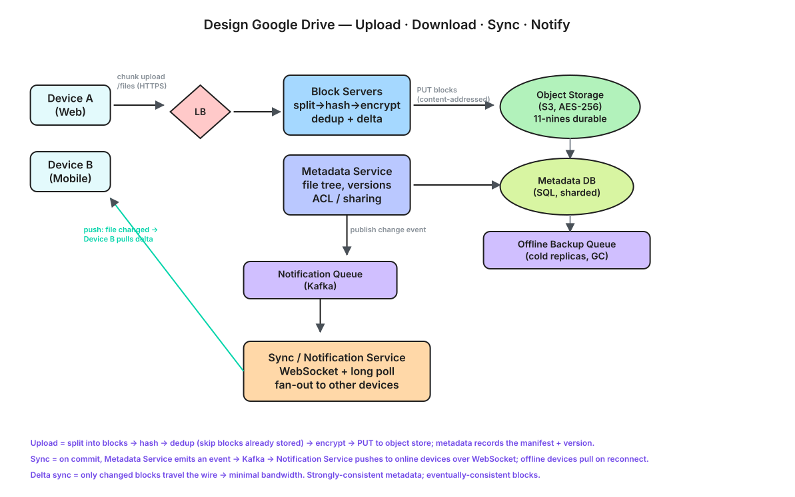

Store, sync, and share files across devices with block-level dedup, delta sync, strong durability, and real-time change propagation at cloud scale.
Functional
Non-Functional
| Property | Target |
|---|---|
| Durability | 11 nines (no data loss) on object storage |
| Availability | 99.99% |
| Sync latency | Changes visible on other devices in seconds |
| Bandwidth efficiency | Upload only changed blocks (delta sync) |
Write (upload) QPS
Read (download) QPS
Ingest bandwidth
Storage growth
Allocated vs. used capacity
Uploads are chunked and go through a metadata handshake so only missing blocks are sent.
// 1. Begin an upload \u2014 client sends file metadata + block hashes POST /files/upload/start { "path": "/docs/report.pdf", "size": 524288, "blocks": ["sha256:ab1..", "sha256:cd2.."] } // server replies with only the blocks it does NOT already have → { "uploadId": "u-123", "missingBlocks": ["sha256:cd2.."] } // 2. Upload each missing block (often a presigned URL straight to blob store) PUT /blocks/{hash} (binary body) // 3. Commit \u2014 finalize the file version from the block list POST /files/upload/commit { "uploadId": "u-123" } // Download / list / share GET /files/{id} // returns block list + presigned GET URLs GET /files?path=/docs // list a folder POST /files/{id}/share { "user": "bob", "role": "editor" }

⬇ Download Interactive Diagram (.excalidraw) ↗ Open in Excalidraw
Client (desktop/mobile/web)
| watcher detects local change -> chunk + hash
v
API Gateway / LB
|
+--> Metadata Service ---- Metadata DB (files, versions, blocks, ACL)
|
+--> Block Service ------ Block Store (content-addressed by hash)
| |
| v
| Object Storage (S3/GCS, 3x replicated) + CDN
|
+--> Sync/Notification Service ---- pub/sub (Kafka) + long-poll/WebSocket
|
v
push "file changed" to other devices
Offline queue on each client reconciles on reconnect.
sha256.Two very different stores: tiny structured metadata vs huge unstructured blocks.
-- files: the namespace + current version pointer files(id, owner_id, path, name, is_folder, current_version_id, updated_at) -- versions: immutable snapshots (enables history/restore) versions(id, file_id, size, created_at, block_manifest_id) -- blocks: content-addressed chunks (dedup key = hash) blocks(hash PRIMARY KEY, size, storage_url, refcount) -- manifest: ordered block list making up a version manifest(version_id, seq, block_hash) -- sharing acl(file_id, user_id, role) -- viewer / editor / owner
| Data | Store | Why |
|---|---|---|
| Metadata (files, versions, ACL) | Relational / sharded SQL (or Spanner) | Strong consistency, transactions, relationships |
| Block content | Object storage (S3/GCS) | Cheap, 11-nines durable, infinitely scalable |
| Hot block index | Redis / KV | Fast "do we have this hash?" lookups |
file-changed event (Kafka) for the owner + shared users.
Device A commit -> Metadata Svc -> Kafka(file-changed) -> Notification Svc
|
push to Device B, C (online)
|
B/C pull metadata diff -> fetch missing blocks
"file (conflicted copy)" — never silently overwrite.current_version_id back at an older snapshot.uploadId so retries don't duplicate versions.| Choice | Pro | Con |
|---|---|---|
| Fixed-size chunks | Simple, fast | Small insert shifts all blocks; content-defined chunking avoids it |
| Block dedup | Huge storage/bandwidth savings | Refcount bookkeeping + GC complexity |
| Strong metadata consistency | No phantom/lost files | Harder to scale writes; needs sharding/Spanner |
| Presigned direct-to-blob | App servers don't move bytes | More complex auth/expiry handling |
| Conflicted copies | Never lose edits | User must manually merge |
Upload/download only the chunks that changed, not the whole file.
A block's identity is its hash, so identical content is stored once.
Storing one physical copy of a block referenced by many files/users.
Ordered list of block hashes that reconstruct a file version.
Per-device marker of the last version seen, used to catch up.
Time-limited URL letting a client read/write blob storage directly.
Delete a block only when no manifest references it anymore.
A second version kept when two offline edits collide, so nothing is lost.